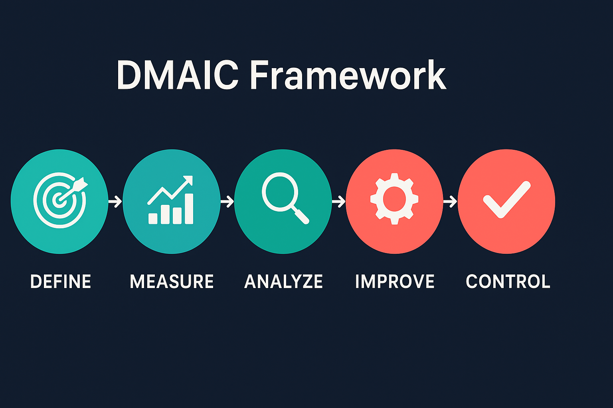

Avg Resolution
36 hrs → 24 hrs
Rework Rate
22% → 10%
FCR
65% → 80%
CSAT
82 → 90
Challenge
The customer support division of a telecom client faced long resolution times (36 hours/ticket), high rework, and declining CSAT.
Approach — DMAIC

DEFINE → MEASURE → ANALYZE → IMPROVE → CONTROL
SIPOC

Data (sample)
| Year | Month | Tickets | AvgResolutionHours | FCR | CSAT | ReworkRate |
|---|---|---|---|---|---|---|
| 2023 | 1 | 902 | 31.7 | 79.5 | 86.4 | 16.0 |
| 2023 | 2 | 1014 | 37.1 | 61.5 | 90.1 | 18.8 |
| 2023 | 3 | 930 | 30.2 | 64.5 | 80.6 | 13.5 |
| 2023 | 4 | 821 | 35.3 | 60.2 | 78.3 | 17.4 |
| 2023 | 5 | 1310 | 28.4 | 69.2 | 84.4 | 22.1 |
| 2023 | 6 | 1362 | 31.5 | 69.6 | 91.8 | 16.4 |
| 2023 | 7 | 1284 | 28.1 | 61.6 | 91.3 | 25.4 |
| 2023 | 8 | 1041 | 36.3 | 69.6 | 78.2 | 12.2 |
| 2023 | 9 | 891 | 26.9 | 72.4 | 78.5 | 24.4 |
| 2023 | 10 | 1361 | 31.0 | 76.6 | 82.4 | 17.4 |
Improvements & Solutions
- Quick Resolution Path (QRP): Automated routing for recurring categories.
- First Contact Checklist: Mandatory intake fields to reduce rework.
- Lean Workflow Redesign: Reduced hand-offs and approval loops.
- Training & Knowledge Base: Microlearning program for Level-1 agents.
Materials
Download sample data & analysis: Download Excel →
Reflection
“This project reaffirmed that Lean Six Sigma isn’t just about reducing defects; it’s about empowering people and building clarity into processes.”